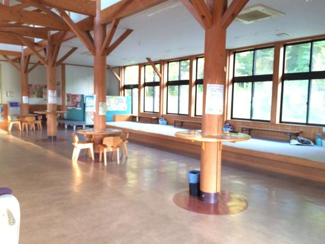

道の駅とようら

国道37号と道道97号が合流する地点に位置する道の駅。 施設内の直売コーナーでは、地元の方々が作った採れたて野菜や、いちご、加工品や水産物、冬期間は活ホタテ・活カキを販売しています。 豊浦産ホタテを使用したホタテフライや、豊浦産いちごのソフトクリームなどのテイクアウトグルメがおすすめです。
お知らせ
施設案内
① 案内所

ドライブに使えるおトクな周辺情報やイベント情報、いろいろ取り揃えております。道の駅とようらに関するお問い合わせや、お気づきの点はこちらへどうぞ。
② 自販機／喫煙スペース

長旅でお疲れの皆さま、喫煙者の皆さま、ここらでちょっと一休みしていきませんか？各種ドリンクやタバコも自販機で販売中。イベントの際はここで特産品の販売もやってます。喫煙スペースは自販機横（室蘭側1カ所）にあります。営業時間中のみ灰皿を設置しています。分煙にご協力ください。
③ 館内入口

道の駅とようらのスタンプはこちら。旅の思い出に、ちっちゃくて可愛いピンズガチャもどうぞ。集めたピンズ用のコルクボードは店内で販売中です。
④ 販売所

地元産のお野菜や海産物、手作り品やお弁当、お土産などなど販売中です。季節限定の商品や、ここだけでしか手に入らないアイテムも。見るだけでも楽しいマーケットに、ぜひお立ち寄りください。
⑤ 喫茶・軽食／無料休憩所

まだまだ続く長いドライブに備えて、イートインスペースでちょっと小腹を満たしていきませんか？ドリンクや軽食、ここだけのオリジナルフードもぜひご賞味ください。地元のヒーロー内藤大助さんの展示品や地元情報、パンフレットなども置いてます。休憩にご利用ください。
⑥ 休憩スペース
夏場はこちらの休憩スペースもご利用できます。トイレへ続く通路はスロープ仕様で車椅子の方も快適。
⑦ トイレ

道の駅とようらのトイレは２４時間ご利用できます。店内からでも、店外からも入れます。身障者用トイレもあります。お気軽にご利用ください。
その他
公衆電話や身障者用設備、ベビーベッドもあります。詳しくは案内所までどうぞ。また、館内はフリーwi-fiもご利用できます。ぜひご利用ください。
交通案内

住所
〒049-5412
虻田郡豊浦町字旭町65番地8（国道37号沿い）
電話番号
開館時間
直売所・テイクアウトコーナー
9:00～15:00
令和3年５月18日より緊急事態宣言に伴いしばらくの間
休館日
なし